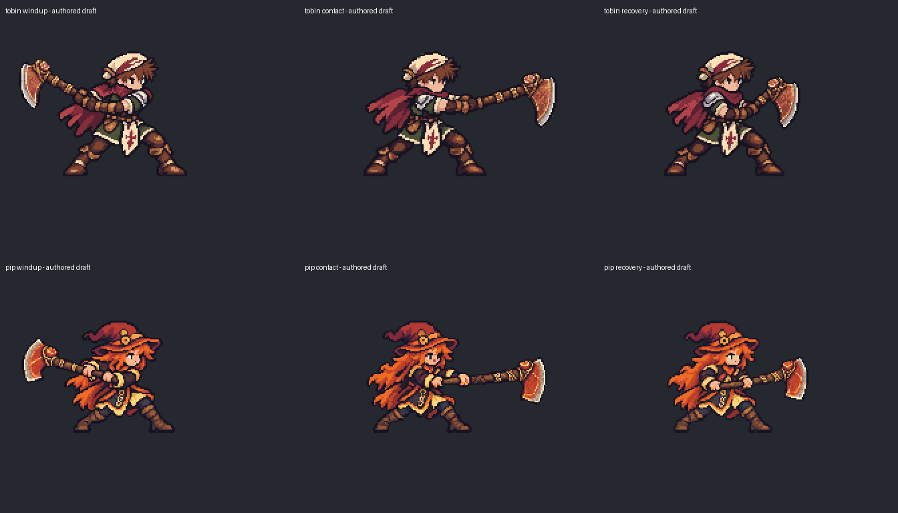

Lateral axe motion review
Authored wind-up, contact and recovery frames. The axe meets the tree from the side, 48 pixels above the shared ground. Both hero and tree use their native sizes. This is a motion proof with equipment still baked into the hero images; it is not the finished interchangeable equipment pack.
Contact
All authored frames at 2x

Original combat is the style master. The tree is the node track's current naturalistic draft and still awaits approval. No tweened rotations or code-drawn weapon/effect shapes are used.
Back to equipment workshop